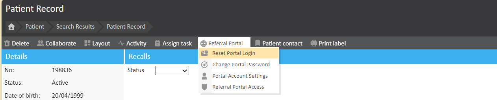

Managers can login to Meddbase via the Occupational Health Portal. This gives managers the opportunity to refer employees online, as well as book appointments for employees and manage existing referrals.
If the manager has forgotten their password they can use the 'Forgotten Password?' functionality on the referral portal, this will ask them to confirm some details like their name, date of birth and email address before resetting their password.
If a manager has forgotten their login details, or their login is not working, a Meddbase Registered user can reset the account.
The purpose of this article is to guide users through the process of resetting a manager's referral portal login, ensuring secure access to the Referral Portal.
Firstly, navigate to the patient record Start Page > Patient > Find Patient > [Select the patient] > Patient Record.
From here you will need to Reset their portal login, this is done by clicking Referral Portal > Reset Portal Login.

This will send a request to the Manger's Work Email address with a link to the Referral Portal and will trigger an email to the manager asking them to re-validate their login details. Once re-validated, they will be able to login to the referral portal.
This is the safest method to enable access for managers as they are prompted to change their password ensuring that they are the only person who knows it.